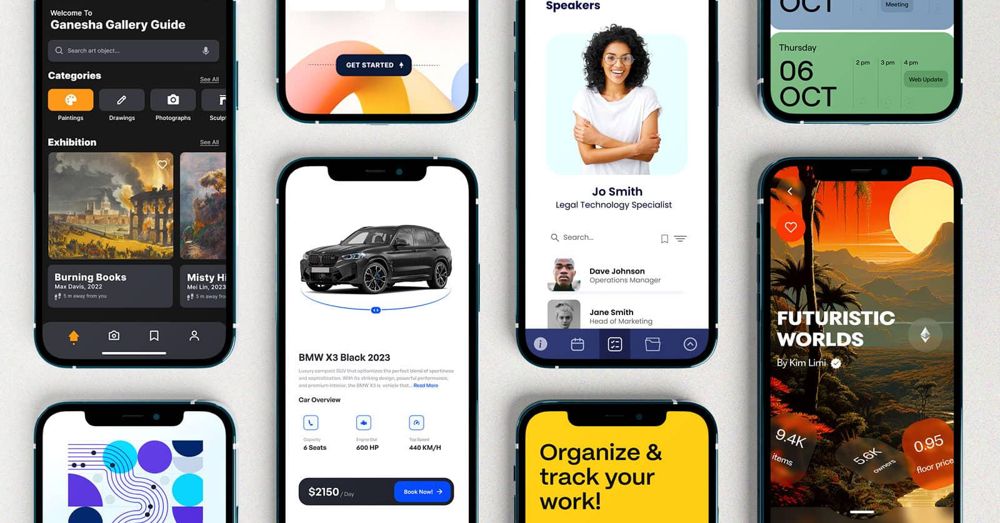
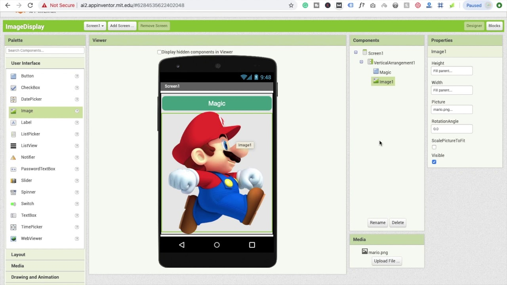
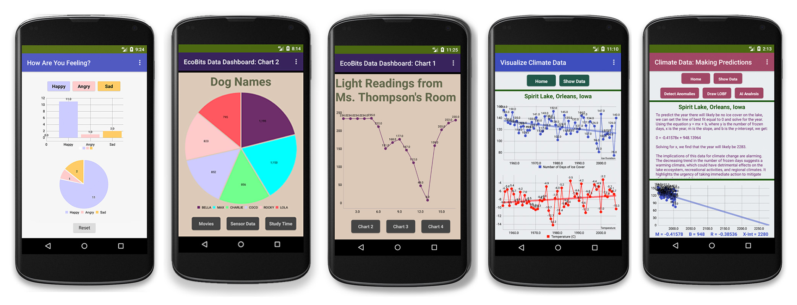
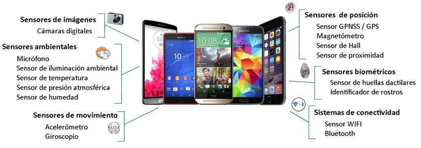
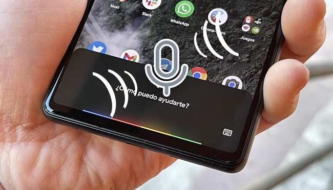

¡Creando tus Propias Aplicaciones Móviles!
Seguro que usas aplicaciones en tu móvil o tablet todos los días: juegos, redes sociales, calculadoras... ¿Te imaginas poder crear las tuyas propias? En esta unidad, vamos a descubrir cómo se diseñan y programan las aplicaciones móviles, ¡y tú serás el desarrollador!
Al igual que con los videojuegos, usaremos una forma de programación visual con bloques, pero esta vez enfocada a los dispositivos móviles. Esto te permitirá ver tus creaciones directamente en un teléfono o tablet.

- - ¡Pronto podrás crear algo así!
1. IDEs de Bloques para Móviles: Tu Taller de Apps
Un IDE (Entorno de Desarrollo Integrado) es como tu "taller" o "estudio" donde creas las aplicaciones. Para móviles y con bloques, el más conocido es App Inventor.
App Inventor te permite diseñar la interfaz de tu aplicación (los botones, imágenes, textos) y luego programar su comportamiento usando bloques, de forma muy similar a como lo hiciste con Scratch.
Partes de un IDE de Bloques (App Inventor):
- Diseñador: Donde arrastras y sueltas los elementos visuales de tu app (botones, etiquetas, imágenes).
- Bloques: Donde programas la lógica de tu app uniendo bloques, como en Scratch.
- Emulador/Conexión: Para probar tu app en un móvil virtual o real.

- ¡Así se ve el entorno de App Inventor!
¡Actividad Práctica! Visita la web de App Inventor y familiarízate con su interfaz: MIT App Inventor
2. Programación Orientada a Eventos: ¡La App Reacciona!
En las aplicaciones móviles, la programación es principalmente orientada a eventos. Esto significa que la aplicación está "esperando" a que algo suceda para reaccionar.
Piensa en un botón: la aplicación no hace nada hasta que tú haces clic en él. Ese clic es un evento. Cuando el evento ocurre, la aplicación ejecuta el código que le has dicho que ejecute para ese evento.
Ejemplo: Un Botón que Habla
cuando Boton1.Clic hacer llamar TextoAVoz1.Hablar mensaje (Hola, mundo!)
- La app espera un evento para actuar.
¡Actividad Práctica! En App Inventor, crea un nuevo proyecto, añade un botón y programa para que, al hacer clic, cambie el texto de una etiqueta.
3. ¿Qué es un Evento?
Un evento es una acción o suceso que ocurre y al que la aplicación puede responder. Son la clave para que tu app sea interactiva.
Tipos Comunes de Eventos en Apps:
- Eventos de usuario:
- Clic/Toque: Cuando el usuario toca un botón o la pantalla.
- Arrastrar: Cuando el usuario mueve un elemento en la pantalla.
- Escribir: Cuando el usuario introduce texto en un campo.
- Eventos del sistema/dispositivo:
- Agitar: Cuando el móvil es agitado.
- Orientación: Cuando el móvil cambia de posición (horizontal/vertical).
- Temporizador: Cuando pasa un tiempo determinado.
Cada vez que ocurre uno de estos eventos, si has programado una respuesta, tu aplicación hará algo.

- ¡Tu app puede reaccionar a muchas cosas!
4. Sensores: ¡Los Ojos y Oídos de tu Móvil!
Los móviles están llenos de sensores que pueden detectar cosas del mundo real y convertirlas en eventos para tu aplicación.
Algunos Sensores Comunes:
- Acelerómetro: Detecta el movimiento y la inclinación del móvil (ej. para juegos de carreras).
- GPS: Conoce la ubicación del móvil (ej. para apps de mapas).
- Giroscopio: Mide la rotación y orientación (más preciso que el acelerómetro).
- Micrófono: Captura sonidos (ej. para apps de reconocimiento de voz).
- Cámara: Captura imágenes y videos.
- Sensor de luz: Detecta la intensidad de la luz ambiental.
Estos sensores generan eventos que tu aplicación puede "escuchar" y usar para hacer cosas interesantes. Por ejemplo, si el acelerómetro detecta que agitas el móvil, ¡puedes programar que se borre la pantalla!

- ¡Tu móvil tiene muchos "superpoderes"!
¡Actividad Práctica! En App Inventor, añade un componente de "Acelerómetro" y programa para que, al agitar el móvil, un sonido se reproduzca.
5. E/S en Apps: Captura y Respuesta de Eventos
Cuando hablamos de E/S (Entrada/Salida) en aplicaciones, nos referimos a cómo la app recibe información (entrada) y cómo muestra o produce información (salida). Los eventos son el corazón de la entrada.
Proceso de Interacción:
- Entrada (Input):
- El usuario toca un botón (evento de clic).
- El móvil se agita (evento del acelerómetro).
- El micrófono detecta voz (evento de sonido).
- Procesamiento:
- La app detecta y "escucha" el evento.
- Ejecuta el código que has programado para ese evento.
- Salida (Output):
- La app cambia el texto de una etiqueta.
- Reproduce un sonido.
- Muestra una imagen diferente.
- Envía un mensaje.

- ¡Así es como tu app "habla" contigo!
¡Actividad Práctica! Crea una app sencilla donde al pulsar un botón, la app pida al usuario su nombre (entrada) y luego diga "¡Hola, [nombre]!" (salida).
Actividades de Evaluación
Demuestra tus habilidades creando aplicaciones móviles que resuelvan problemas específicos.
-
Actividad 1: "Mi Calculadora de Edad"
Crea una aplicación móvil sencilla en App Inventor que pida al usuario su año de nacimiento (usando un campo de texto y un botón). Al pulsar el botón, la app debe calcular y mostrar la edad aproximada del usuario en una etiqueta. Asegúrate de que la app reaccione al evento de clic del botón y muestre la información correctamente.
Criterios trabajados:
- 2.3. Conocer y resolver la variedad de problemas posibles, desarrollando una aplicación móvil, particularizando las soluciones.
-
Actividad 2: "Botón Mágico de Sonido"
Diseña una aplicación que tenga un botón grande en el centro de la pantalla. Cuando el usuario toque el botón, la aplicación debe reproducir un sonido corto (puedes usar un sonido predeterminado de App Inventor o subir uno sencillo). Además, la app debe cambiar el color de fondo de la pantalla cada vez que se toque el botón.
Criterios trabajados:
- 2.3. Conocer y resolver la variedad de problemas posibles, desarrollando una aplicación móvil, particularizando las soluciones.
-
Actividad 3: "Agita para Mensaje Secreto"
Crea una aplicación que utilice el sensor de acelerómetro del móvil. La app debe mostrar un mensaje secreto (por ejemplo, "¡Has descubierto el secreto!") en una etiqueta solo cuando el usuario agite el móvil. Cuando el móvil esté en reposo, la etiqueta debe estar vacía o mostrar un mensaje como "Agita para ver el secreto".
Criterios trabajados:
- 2.3. Conocer y resolver la variedad de problemas posibles, desarrollando una aplicación móvil, particularizando las soluciones.
Cuestionario: ¡Demuestra lo que sabes de Apps!
Responde a las siguientes preguntas para comprobar lo que has aprendido en esta unidad.